Ты ориентируешься в лесу

0%
Опасный уровень
Тебе пока сложно ориентироваться
и принимать безопасные решения в лесу
Правильные ответы
Дождливый вечер в лесу
Вопрос 1

Дождевик

Фонарик

Карта маршрута
Незнакомый маршрут
Вопрос 2
Компас
Пауэрбанк
Карта маршрута
Летняя прогулка
Вопрос 3
Панама
Спрей
Закрытая одежда
Холодное утро
Вопрос 4
Перчатки
Много одежды
Бафф
Поход за грибами
Вопрос 5
Нож
Корзинка
Определитель
Плотный пакет